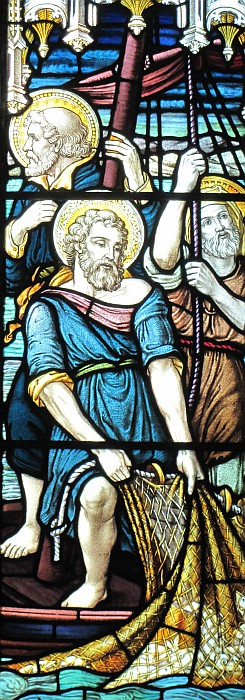

Sèrmon au Sèrvice en Jèrriais
à l'Églyise dé Saint Louothains
Dînmanche lé 25 d'Avri 2004
St Jean 21, 1-19
Ch'est chîn la saîthon d'Pâques et j' v'nons dé célébrer, i' y'a tchinze jours, lé Vendrédi Saint et l'Dînmanche dé Pâques. Et ch'est bein à propos qué, dans la liturgie dé l'Églyise anglyicanne, la léçon nommée pouor aniet est la léçon dé l'Êvangile dé Saint Jean qué Enid nos a liue i' y'a tchiques minnutes. Vèthe, bein à propos, car St Jean nos fournit auve un împortant récord dé la rencontre entré Jésû et ses disciplyes. Ch'est chîn la traisième fais après la résurrection tch'i' sont ensembl'ye et ch'est eune occâsion tchi encouothage et rasseuthe chutte bande d'hommes tch'avaient pâssé trais ans auve lus maître. I' l'avaient veu crucifié, mort et enterré et ch'tait tout juste tch'i' pouvaient craithe tch'i' r'tait en vie et parmi ieux.
Plusieurs 'taient pêtcheux et les v'là au bord du Lac Tibériade. I' 'taient connaîssants et savaient bein qué ch'est quand i' fait niet qué nou fait eune bouonne pêque. I' lus embèrtchîtent, mais chutte séthée-là i' n'happîtent rein du tout.

Au bord du lac, Jésû 'tait là à les dgetter. Viyant tch'i' n'avaient happé rein du tout, i' lus criit “Halez vot' drannet par lé bord dé drouaite dé vot' baté, et ous en éthez du paîsson.” Et St Jean nos dit qué l'drannet fut remplyi dé chent chînquante-trais grands paîssons.
Ah! les pouôrres discipl'yes; i' y'avait d'tchi à apprendre. Trais ans d'vant, Jésû lus avait dit “Suivez-mé et ous s'sez pêtcheux d'hommes.” Chu jour-là il' avaient oublié dé l'suivre et avaient èrc'menchi lus vièr travas comme pêtcheux d'paîssons. Mais, hélas, sans succès. Et Jésû 'tait triste dé les vaie aller à r'tchulons; dé les vaie êprouver dé vivre sans li; dé vouler èrprendre lus vie du temps pâssé pustôt qué d'avanchi dans l'av'nîn.
Mais auve sa grâce couôtumiéthe Jésû les r'met sus l'bouon c'mîn. Auve li en charge comme Seigneu, i' y'a succès, et succès tel qu'i' n'avaient janmais connu d'vant – chent chînquante-trais grands paîssons! Nou-s-a êprouvé dé dêcouvri la sîngnificâtion dé chu nombre chent chînquante-trais, mais i' suffit d'dithe qué auve Jésû la pêque n'a autcheune lînmite. Et auve la commission à la fîn dé l'Êvangile dé St Matchi “Allez et faites discipl'yes dé toutes les nâtions” (autrément dit “Séyiz pêtcheux d'hommes”), les discipl'yes apprîntent chu jour-là qué, auve lé pouver du Saint Esprit, lus tâche dé suivre et sèrvi lus Maître 'tait garantie.
Mais tchi qu'en 'tait dé Pièrre? Après trais ans dé suivre et sèrvi san Maître si fidèlement, i' l'avait dênié trais fais. Trais fais d'vant la crucifixion il avait dit “Jé n' l'connais pas.” Et à ch't heu, Jésû lî d'mande “M'aimes-tu vraînment?” Trais fais Jésû l'app'lit Simon – pas Pièrre. I' dut être mortifié tch'i' n'tait pus l'homme dé pièrre, tch'i n'tait pus lé rotchi tch'il avait 'té nommé. Et trais fais i' ouait la tchestchion “Es-tu vraînment seux qué tu m'aimes?”
Simon Pièrre n' s'trouve pon bein confortabl'ye car la tchestchion lé met mal à s'n aise d'vant l's autres. San comport n'a pas 'té un bouon exempl'ye ni un bouon têmouongnage dé s'n amour. Mais la tchestchion cherche eune rêponse et la rêponse amène soulagement. Simon est seux d'eune chose - lé Jésû tchi sait tout entouor li, lé connaît…. “Tu sais…. Tu sais…. Tu sais tout ch'qu'i' y'a… Tu sais qué j' t'aime.”
La dêcliathâtion dé s'n amour pouor Jésû est assez et Jésû lî dit “Va t'en – donne à mangi à mes brébis.” Eune nouvelle responsabilité pouor lé pécheux après sa restaurâtion.
Pouor Pièrre, comme pouor nous, Jésû n'arrête pas qué j'séyons parfaits pouor nos appointer à eune nouvelle tâche. I' nos prend, eune fais pardonnés, comme jé sommes et i' nos donne san autorité d'agi dans san nom.
La mort dé Jésû-Christ sus la Crouaix dé Calvaithe gângnit lé pardon pouor tous. J'sommes tous pécheux et j'mantchons d'agi comme j'dév'thêmes chaque jour. Dans la vie j'nos êdgéthons souvent d'la bouonne vouaie et nos actions, nos patholes, nos pensées n'honorent pas lé Bouon Dgieu. L'êfant prodigue s'en fut liain dé san péthe mais quand il èrvînt i' fut èrchévé à bras ouvèrts.
Quand j'mantchons i' n'faut pon être abattu ni dêcouôthagi. Pièrre éthait peu èrtouônner à san mêtchi dé pêtcheux, mais i' dêcouvrit qué quand Jésû restaure ch'est pouor nos donner l'opporteunité d'aller en avanche. Il ouvre la porte pouor nos condithe où'est qué j' n'avons pas 'té d'vant. I' veurt nos rêjoui auve ses surprînses; i' veurt nos exciter auve sa fraîcheur; i' veurt nos vaie nos appréchi pus près dé li chaque jour.
Mais i' nos dgêrnit qué la pus împortante condîtion, ch'est dé lé suivre dé près. Ch'est la condîtion tchi dut renvyier Pièrre au jour quand i' rencontrit Jésû pouor la preunmié fais et ouït tout sîmpliément “Suis-mé!”
“Suis-mé” i' dit à Pièrre même qué tchique jour va tchi mén'thait à sa mort sus eune crouaix.
L'auteur dé l'Êpitre ès Hébreux nos dit “Gardez vos ièrs fixés sus Jésû.” Autrément j'allons chopper et nos gav'ler tout not' long.
Et bein èv'là l'învitâtion qué Jésû offre à tous, hommes et femmes, riches et pauvres, gens dé toute race à travers lé monde. “Suis-mé” “Suivez-mé” si ous voulez joui en abondance dé vot' vie sus la tèrre et aver la garantie d'eune vie êtèrnelle auve li.
Dans l'quatorzième chapitre dé l'Êvangile dé St Jean j'liêthons les patholes dé Jésû “Mé seul, unniquement, j'sis lé c'mîn, la véthité et la vie.” Lé c'mîn n'est pon eune route sus un atlas; la véthité n'est pon l'idée d'un philosophe; la vie n'est pon sîmpliément lé contraithe d'la mort. Nânnîn – touos les trais sont eune pèrsonne et chutte pèrsonne ch'est Jésû-Christ lî-même. Et si j'voulons aver connaîssance dé touos les trais i' faut aver Jésû et ch'est pouor chenna tch'i' nos dit “Suivez-mé”.
Lé huit dé Mai pouor tchinze jours j'allons aver parmi nous au mains trais chents hommes tchi s'en vont visiter les douze paraîsses souos l'titre dé “Marchi Jèrri” – “Walk Jersey”. I' veulent chârer chein tch'il' ont dêcouvèrt, qué Jésû est ressuscité et qu'il a l'pouver dé transformer la vie dé tous tchi veulent lé suivre. Il' ont dêcouvèrt l'împortance dé lus t'nîn tout près dé li et dé l'garder constamment en veue. Il' ont dêcouvèrt qué ch'est li seul tchi peut les protégi et les m'ner en seûtheté.
Il' ont tous lé d'si d'èrmèrcier lé Sauveu si fidèle et génétheux et d'exprimer lus gratitude d'eune manniéthe pratique. I' veinnent lus offri à Dgieu dans san sèrvice.
Pouor tchinze jours i' marchéthont dans les pas dé Pièrre donnant à mangi ès angnieaux et ès brébis, les habitants dé Jèrri. I' f'thont chein qué, probablyément, j' dév'thêmes être en train dé faithe bein pus nos-mêmes.
I' veinnent comme missionaithes à un peupl'ye tchi s'est êdgéthé dé la bouonne vouaie, à un peupl'ye tch'a dênié Jésû, souvent învolontaithement, à un peupl'ye tchi dans bein des cas n'a janmais rencontré Jésû car j'avons mantchi dé l'présenter comme têmoins dé la fouai chrêtchienne.
Si j'avons chouaîsi dé suivre Jésû comme Sauveu et Seigneu, j'avons la responsabilité dé l'întroduithe ès cheins tchi n'lé connaîssent pon. Qué j'saîssissons l'opporteunité dé supporter “Marchi Jèrri”, tout au mains dans nos priéthes. Mais, tchi qu'en est d'explyitchi à tchitch'un la raîthon qu'ous êtes v'nus ichîn à ch't arlévée? Vos patholes nouôrrithont ieune des brébis dé Jésû.
Brian Vibèrt
Viyiz étout: